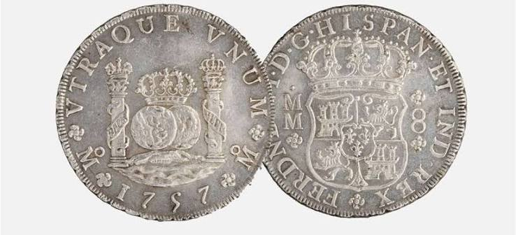

Introducción
¿Sabías que el primer "dólar" global no nació en Estados Unidos, sino en las minas de México y Sudamérica? ¿Y si te dijeran que las independencias de Hispanoamérica, lejos de ser una gesta de liberación absoluta, fueron un astuto movimiento de ajedrez geopolítico diseñado por el Imperio británico para fragmentar y debilitar a la región? En esta lección desafiaremos las narrativas simplistas de la historia y exploraremos el impacto de la fragmentación de nuestra identidad común.
Al finalizar esta lección, serás capaz de:
- Comprender el impacto geopolítico de la fragmentación del Imperio español a inicios del siglo XIX.
- Identificar el papel de la "Leyenda Negra" y la influencia británica en los procesos de independencia americanos.
- Contrastar el modelo de imperio civilizador (español) con el modelo imperialista mercantil (anglosajón).
- Analizar las oportunidades de una Hispanoamérica unida frente a las potencias globales del siglo XXI como Estados Unidos y China.
El Espejismo de la Independencia y la Mano Británica
La narrativa escolar nos enseña que las independencias americanas fueron el resultado exclusivo del heroísmo local contra un imperio opresor. Sin embargo, al analizar la geopolítica de la época, descubrimos que el Imperio británico —incapaz de derrotar militarmente a España— jugó un papel crucial desde las sombras.
Inglaterra entendía perfectamente que la fuerza de la América española residía en su unidad. Para destruirla, recurrió a la infiltración cultural y de inteligencia, promoviendo la famosa "Leyenda Negra" para sembrar resentimiento en las élites criollas. Figuras clave de la independencia compartieron logias masónicas en Londres, y al concretarse la separación, todos los nuevos países hispanoamericanos nacieron instantáneamente endeudados con banqueros anglosajones.
¿El resultado? La desintegración de un territorio unido en más de veinte repúblicas débiles, vulnerables a la pérdida de soberanía territorial y económica (como la pérdida del norte de México o de las Islas Malvinas en Argentina).
Imperio Civilizador vs. Imperialismo Mercantil
Es fundamental distinguir entre dos formas radicalmente opuestas de entender la expansión global:
- El Imperio Civilizador (Roma, España): Se enfoca en integrarse al territorio, construir ciudades, universidades, hospitales y templos. Promueve el mestizaje porque ve al otro a través de la fe (todos somos hijos de Dios). El objetivo es replicar la propia civilización en el nuevo suelo.
- El Imperialismo Mercantil (Inglaterra): Funciona como una máquina de extracción de recursos. No le interesa civilizar, asimilar ni mezclarse con la población local; su único motor es el comercio y la acumulación de capital.
Una analogía muy ilustrativa es la gastronomía: allá donde fue España se come delicioso porque hubo mestizaje, intercambio e integración cultural. Por el contrario, tras siglos de dominio británico global, su legado culinario sigue siendo sumamente limitado, pues nunca les interesó integrarse con las culturas locales, sino únicamente extraer su riqueza.
El Real de a Ocho: El Verdadero Gigante Económico
Antes del dólar o del euro, el mundo entero comerciaba con el Real de a Ocho (también conocido como el dólar hispano o "spanish dollar"). Esta moneda, acuñada principalmente con la plata de las minas de México (Zacatecas, Pachuca) y Perú (Potosí), era el referente financiero global indiscutible, copiado incluso por la lejana China.
Frente al mito de que España se "robó todo el oro y la plata", la realidad histórica muestra que cerca del 80% al 95% de la riqueza producida permanecía en América. Se utilizaba para financiar la infraestructura del virreinato, construir universidades, puertos y las majestuosas iglesias barrocas que aún hoy admiramos. El impuesto que iba para la corona (el Quinto Real) era de apenas el 20%, un porcentaje mucho menor de lo que cualquier ciudadano paga hoy en impuestos.
Como contraste asombroso: una sola minera canadiense moderna extrae hoy en día, en menos de una semana, más oro del que España extrajo de toda América durante sus 300 años de presencia virreinal, dejando a cambio mínimos impuestos y salarios deficientes.
Geopolítica del Siglo XXI: ¿Hacia una Nueva Unidad?
La fragmentación de Hispanoamérica nos ha dejado en una posición de debilidad frente a las superpotencias. En lugar de negociar con fuerza, los gobiernos locales suelen actuar de forma aislada e influenciable.
Actualmente, Hispanoamérica sigue siendo un territorio de disputa geopolítica. El resurgimiento del interés de Estados Unidos y la creciente presencia financiera de China abren un dilema. La solución inteligente no consiste en volver al pasado imperial ni en subordinarse ciegamente a nuevos imperios, sino en construir una sólida unión económica, aduanera y cultural.
Compartimos lengua, historia, valores y territorio. Si Hispanoamérica lograra presentarse como un bloque unificado, podría negociar de igual a igual con las potencias globales, exigiendo respeto a sus soberanías y un reparto equitativo de los beneficios económicos. Sin embargo, para lograrlo, primero debemos sanar el trauma histórico y comprender quiénes somos realmente.
Contenido Multimedia y Galería
Galería Ilustrativa

Summary
En esta lección hemos redescubierto la historia compartida de Hispanoamérica desde una perspectiva crítica y geopolítica. Los puntos clave para recordar son:
- La fragmentación como estrategia: El colapso del Imperio español fue acelerado por la inteligencia y los intereses comerciales británicos, resultando en repúblicas divididas y endeudadas.
- El modelo civilizador: A diferencia de las colonias británicas de pura extracción mercantil, los virreinatos españoles fueron concebidos como extensiones de una misma civilización mestiza.
- La riqueza local: El Real de a Ocho demuestra el poder económico hispanoamericano de la época; la inmensa mayoría de la riqueza mineral se quedaba en suelo americano para construir infraestructura.
- El camino de la unidad: Para el siglo XXI, la única forma de que las naciones hispanas dejen de ser peones en el tablero de potencias como EE. UU. o China es recuperar su cohesión cultural y económica.